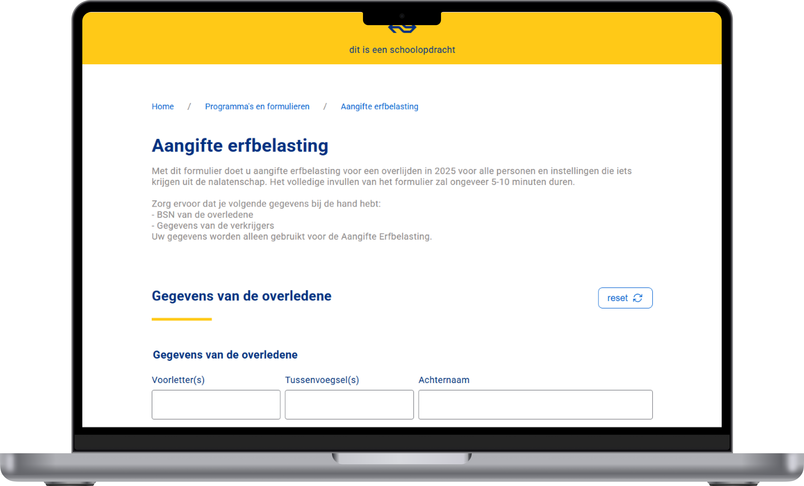

4 weeks
february - march 2026
UX/UI designer
Front end developer
Visual Studio Code
html/css/javascript
For this course I had to build an inheritance tax form, styled after NS (Dutch Railways). The core requirement: the form had to work fully without Javascript, but become better with it: a concept known as progressive enhancement.
There was also a strong focus on usability and accessibility: the form had to work for everyone, including people who only use a keyboard or a screen reader.

Orientation & HTML foundation
Read articles about forms, attended validation workshops (My teachers: Vasilis & Victor). Set up the first HTML structure using fieldset.
Styling & progressive disclosure
Built out the CSS in NS style. Questions expand and collapse based on previous answers — working without Javascript using CSS nesting.
Second pattern & validation
Built the second form pattern: adding and individually removing beneficiaries. Added custom JavaScript validation using aria-invalid, aria-describedby and aria-live.
Refinement & extra features
Local storage & reset confirmation via dialog, dark/light mode, unlimited beneficiaries via innerHTML, improved radio button styling and keyboard accessibility.
Follow-up questions expand and collapse based on previous answers. So it functions even when Javascript is disabled, ensuring no user is locked out of the form flow.
Error messages are announced to screen readers using aria-live="polite" and linked to their inputs via aria-describedby. Invalid fields are flagged with aria-invalid="true", and visual errors are powered by :user-invalid in CSS — so feedback is clear for both sighted and non-sighted users.

Clarifying information for complex questions is tucked inside native <details> elements. These are keyboard-accessible and semantic, requiring no extra Javascript or ARIA tricks.
Hiding radio buttons with display:none makes them invisible to keyboards and screen readers. I fixed this using position: absolute with width/height: 0, keeping them in the DOM while adding a clearly visible focus state.

Hiding radio buttons with display:none makes them invisible to keyboards and screen readers. I fixed this using position: absolute with width/height: 0, keeping them in the DOM while adding a clearly visible focus state.

Certain fields use a native <datalist> element to suggest options as the user types. This reduces input errors and speeds up form completion without any custom Javascript. It also works with screen readers and keyboard navigation out of the box.
Building forms is much harder than I expected. There's a lot more to usability, validation and accessibility than just putting a few inputs on a page
This was a genuinely challenging project that pushed me well outside my comfort zone. Combining accessibility, validation and progressive enhancement all at once was entirely new to me. Looking back, I'm proud of what I built and I'll never underestimate forms again.